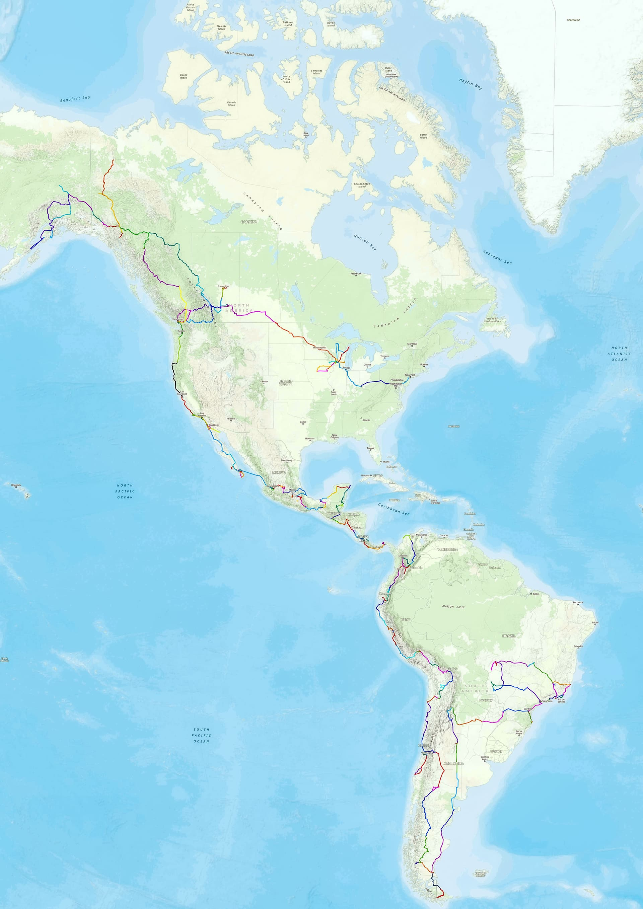

{kind=link}
Dempster Highway · 育空 → 西北地区
8 月底 · 苔原秋色最佳自驾必走：比费尔班克斯向北的道顿公路更能实抵北冰洋岸。8 月底苔原红/黄/绿、雪山、蓝天组合极美。全程碎石但路况好；入口至 Eagle Plains 很长无人区，才有加油站与住宿。攻略常说要带两个备胎，作者认为普通轿车也能走。
§3.1
作者：Mr.T（美卡论坛 / 美国信用卡指南读者投稿）· 单人单车 · 2008 Acura MDX · 美国绿卡 · 全程自驾造访 17 个国家（美、加 + 拉美 15 国）· 近 10 万公里。 2021 年 9 月初从阿拉斯加费尔班克斯南下，2022 年 7 月抵乌斯怀亚，之后延伸巴西。 数据整理自其 2022-12-17 发表的《泛美公路自驾指南》。 未走死马镇/道顿公路北端，但此前单独走过 Dempster Highway 抵北冰洋岸。
从纽约出发，经加拿大育空/阿拉斯加、墨西哥与中美七国，海运穿越达连隘口后纵穿南美至乌斯怀亚，再北上巴西。 原文 §2 有陆路入境记录的拉美国家共 15 个，加上美国、加拿大合计 17 国（不含仅路过的巴拉圭边境区域）。

以下整理 Mr.T 在《泛美公路自驾指南》中对实际走法最有帮助的叙述：最佳季节、推荐方向、沿途小镇/观景点与路况提醒。 与时间线表格中的「活动与备注」互为补充；完整上下文见原文。
自驾必走：比费尔班克斯向北的道顿公路更能实抵北冰洋岸。8 月底苔原红/黄/绿、雪山、蓝天组合极美。全程碎石但路况好；入口至 Eagle Plains 很长无人区，才有加油站与住宿。攻略常说要带两个备胎，作者认为普通轿车也能走。
对时间要求很紧。作者 4 天内走了两次，第二次颜色明显变暗。前段柏油、后段碎石不难，轿车可通行。
从 Homer 报团，5 人小飞机直接降海滩。棕熊在河流入海口抓鱼，鱼太多懒得理人，可离得很近。
作者 10 月初走：卡尔加里附近已一片凄凉，但洛基山西侧那端正是好时候。从东向西、贴美加边境往温哥华方向开，途经 Creston、Stagleap Provincial Park、Castlegar、Osoyoos 等小镇，秋色都不错。
温哥华北部 99 号常规观鹰点。每年 12 月开始白头鹰不少，挑个好天气一般能看到很多。
加拿大自驾常识级景观公路，作者标注「算是常识，略」——但仍是 BC/AB 段核心动线之一。
巨大海湾，灰鲸每年 2–3 月来此产仔。四人小船可很近地摸鲸，鲸也爱与人类互动。约 $450/船/天，海上 4–5 小时。作者包两天：第一天摸鲸，第二天练熟无人机起降后航拍。小镇偏落后，旅馆饭馆勉强够用，小馆 taco 不错。
瓜纳华托、San Miguel 更偏旅游，满街游客店铺；莫雷利亚更生活化，殖民老城保存完整，像走在欧洲街面。
墨西哥城边热门点。作者中午到游人如织；后来发现早上有热气球，但建议少坐——不可控、风险高（作者在卡帕多西亚坐过一次即觉不安全，当地隔几年就有事故新闻）。
除奇琴伊察外：Uxmal 圆形金字塔、Palenque 巴加尔大帝陵墓、Tikal 城市群、Toniná 玛雅最后一块纪念碑——逛完基本齐活。Uxmal 与奇琴伊察可一起；Tikal 常从伯利兹一日游；Palenque 建议从 Villahermosa 去，Toniná 从 San Cristóbal 去（位置偏、人少）。
较推荐：危地马拉城坐车到安提古报团即可；也可自带帐篷自助。Fuego 隔一会儿喷一次，夜间看很震撼。缺点：住宿差、夜里冷，作者扛相机拍照一度抖到险些失温。
马那瓜开车 20 多分钟；停车场修到火山口边，停车即见。推荐傍晚去：天暗后清楚看到岩浆流动，光线也适合拍照。
多数游客报河流团看鳄鱼/鸟/蛙，或躺海滩。若能自驾，作者更推荐从首都向东：蜿蜒山路（部分土路）、成片甘蔗地、彩色农田块、火山背景——值得一日的 road trip。
三省交界绵延山区，有点像国内云贵大山。以 Manizales、Pereira、Armenia 为中心，可报咖啡园、品当地咖啡——作者在此才发现咖啡可像茶叶一样沏成透彻的饮料。Salento 近 200 年古镇 + Valle del Cocora 高棕榈谷在同一条线。
红白色建筑群保存较完整。若去过国内云南各类古镇，能想象其形态——开发健全，满街饭馆与纪念品店，基本吃旅游饭。
Quilotoa 火山口湖，规模堪比萨尔瓦多圣安娜火山口；Cotopaxi 厄第二高峰，车至 ~4600 m 停车场，再爬 200 m 到 4800 m 观景台，基多出发一天来回；Chimborazo 最高峰，车至 4800 m 营地，人可再上至 5100 m。气候怪：4600 m 大门处风大站不住，4800 m 反而风和日丽。
作者认为南美雪山仅次于 Patagonia。先沿海边 1 号公路北到 Paramonga，走 16 号盘山，经 Conococha 转 3N 北行——雪山一排排，像走川藏线。Huaraz 户外枢纽，规模/海拔类似康定；时间紧可开车去 Laguna Paron、Laguna de Llanganuco，高山湖翠蓝值得一去。
常规报团一日可达。作者自驾从梯田出来没走常规回头路，继续沿土路翻山到 Pachar，沿乌鲁班巴河公路到 Urubamba——金色麦田与远处雪山呼应，山上景色不错。
出乌尤尼至 San Cristóbal 仍柏油，之后 ~300 km 无人区，土路+沙地；Google 地图极不准，需前人路线截图。大坑巨石限速 <40 km/h，沙地跟车辙。经 Laguna Colorada 火烈鸟、Eduardo Avaroa 雪山湖、Laguna Blanca 小羊驼；全程 4000 m+，难度高于国内阿里线。出境智利后 20 km 从 4000 m 速降至 2000 m，像新藏线。
范围极大，整体很平、车速快；精华在安第斯边境。Bariloche 湖区「小瑞士」；El Chaltén / El Calafate 与智利百内同属顶级徒步区。40 号公路大多柏油，例外：Gdor. Gregores → El Calafate 间 Lago Cardiel 泥路——泥潭像溜冰，原驼等野生动物常横穿公路（作者调侃：撞了拖回去让饭馆炖，味道很棒）。
从阿根廷本土去乌斯怀亚须穿智利：一天内两次海关，四格表格依次盖阿/智海关与移民局章。麦哲伦海峡要轮渡（作者疫情期间等近 1 小时）。冬季冰雪路面需谨慎。过智利再入阿后，沿 Lago Fagnano 走 3 号公路向西进山。乌斯怀亚多为南极出发港；Tierra del Fuego 国家公园有 3 号公路尽头可开车打卡。未去复活节岛（需飞，不在陆路线上）。
与阿拉斯加、墨西哥等地需坐船不同，坐岸边即可——最近时鲸离岸仅 7–8 m。海滨旅游城市，吃住方便；附近 Valdes 半岛可看多种动物。
作者称整个南美最震撼的古城：山谷两侧老房、多座大教堂；有规模的小城，没那么旅游化。
风景堪比加州 1 号公路，但沿线城市建设远逊。中途 Paraty 为葡萄牙殖民地风格小镇；规模比 Ouro Preto 小、更偏旅游。
| # | 区域 | 国家/地区 | 城市 / 地点 | 活动与备注 | 造访时间 | 原文发表 | 置信度 | 原文章节 |
|---|
共 96 张（泛美指南 69 张 + 潘塔纳尔另文 27 张），均已下载至本地
Mr.T-泛美公路游记-assets/，离线可浏览。按原文章节标注拍摄地；点击缩略图查看本地原图。